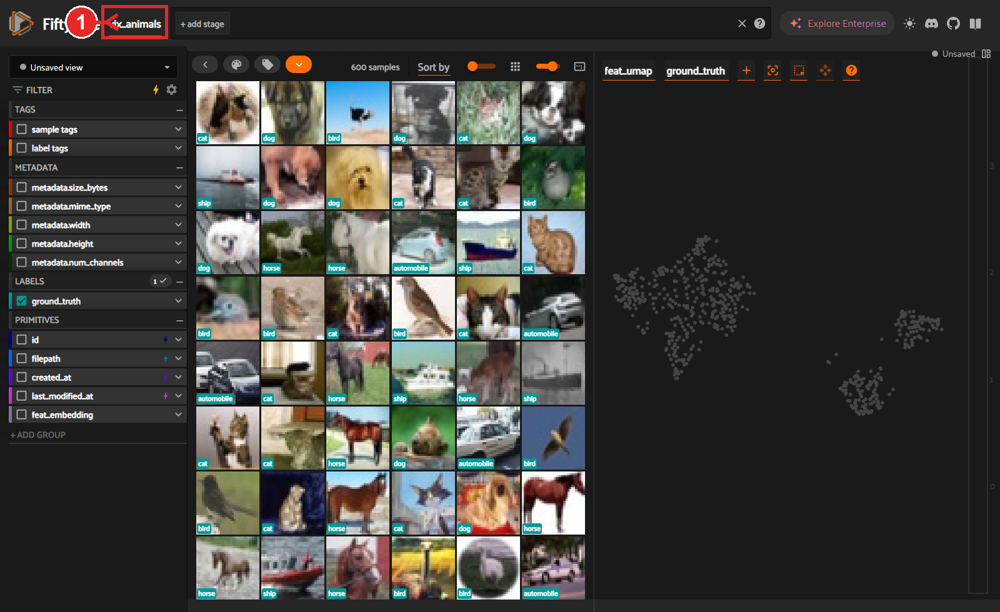
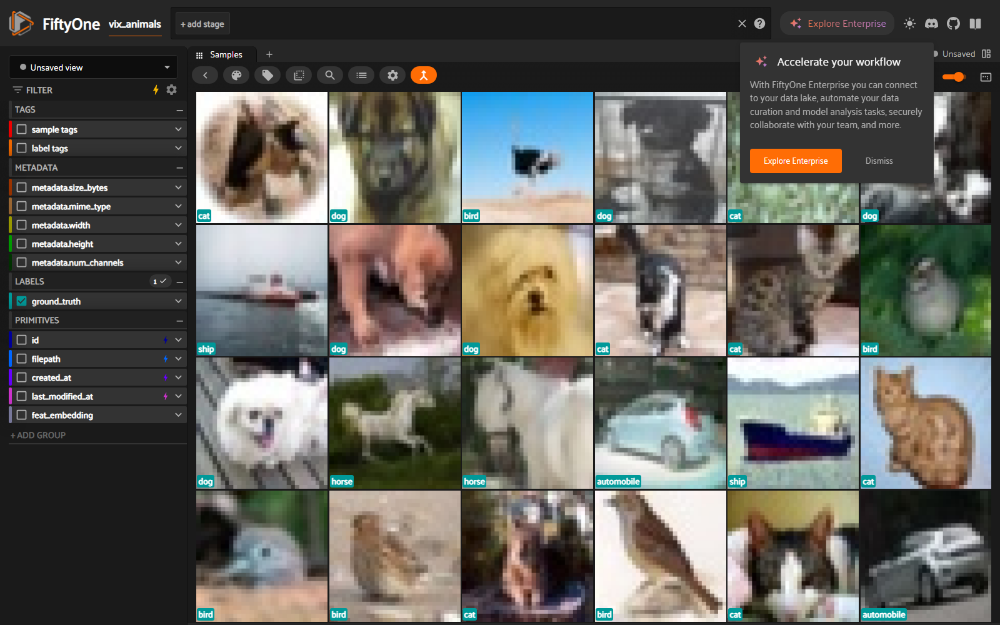
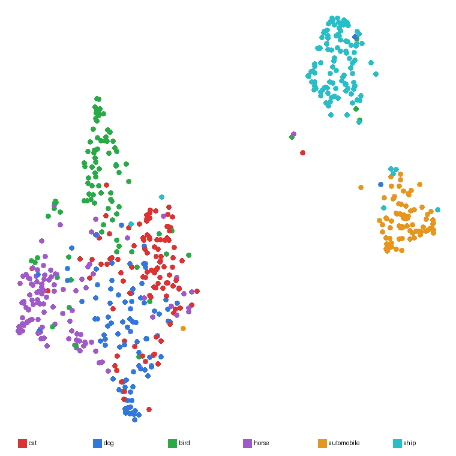
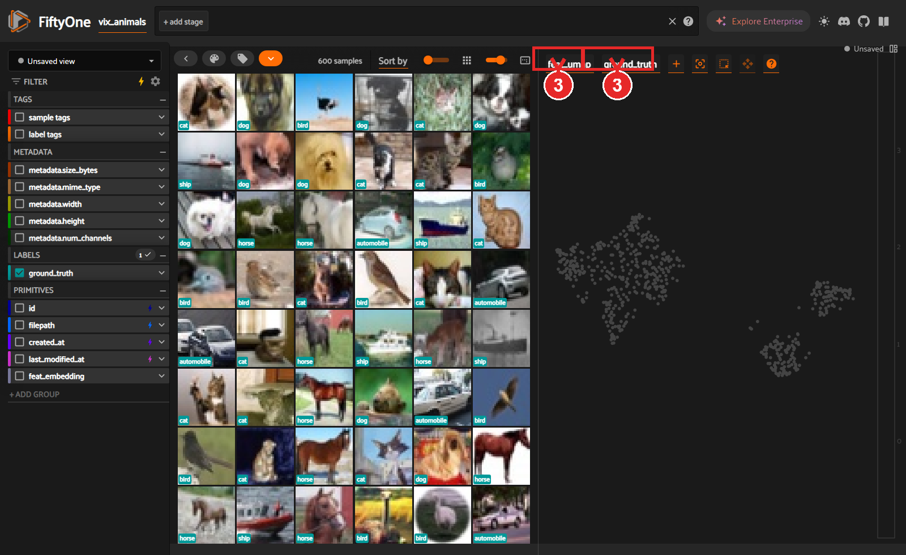
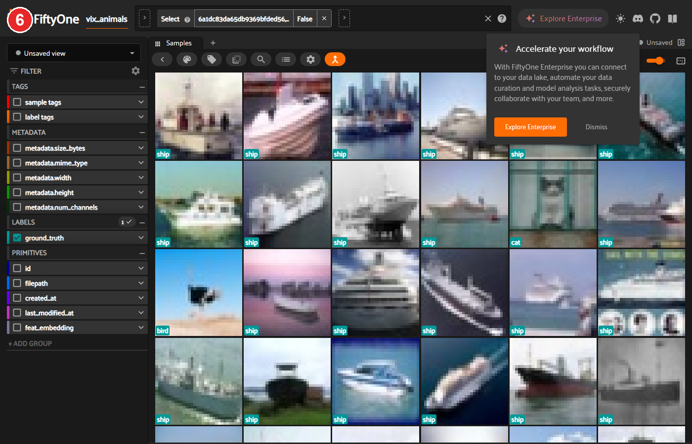
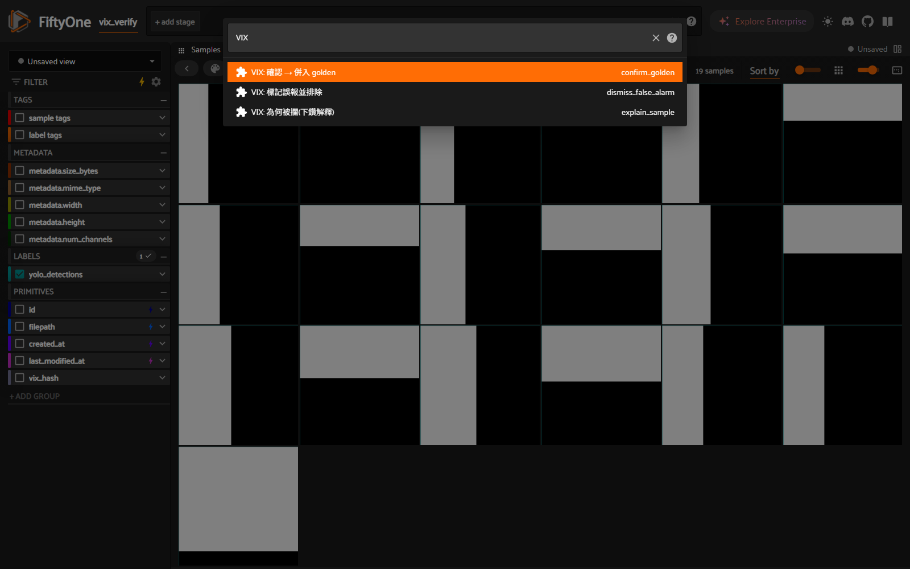
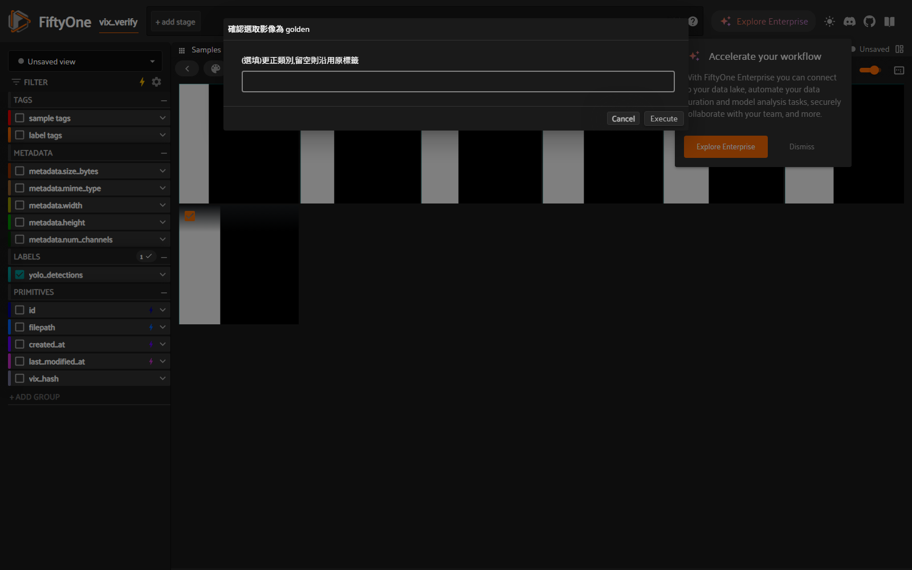

VIX 標準操作手冊 (SOP)
Vision Integrity eXplainability — Data-Centric AI 資料把關工具。本手冊讓任何工程師「看了就會用」,同時涵蓋 原生 FiftyOne 與 VIX 客製 兩部分。
0. 這份文件 & VIX 是什麼
VIX 是一個「資料把關員 (data gatekeeper)」:在你把新資料丟進去訓練 YOLO/偵測模型之前, 幫你回答兩個平常難以回答的問題 ——
- 我剛加的這批資料,到底會讓模型變好還是變壞?(資料歸因)
- 我的新資料是不是悄悄讓某個類別的定義漂移了?(概念漂移)
做法:用 YOLO 信心度 + DINOv2 特徵距離 兩個軸,自動把每張圖判成「直接通過 (pass)」或 「需人工覆核 (review)」並附白話理由;人工在 GUI 確認後寫回,全程留下不可竄改的稽核帳本。
VIX 蓋在 FiftyOne 之上 —— FiftyOne 提供「看資料的眼睛」(資料庫 + GUI + 降維視覺化),VIX 補上「判斷資料好壞的大腦 + 工作流 + 稽核」。
1. 觀念:FiftyOne 與 VIX 的分工
| 層面 | FiftyOne 原生 | VIX 客製 |
|---|---|---|
| 資料儲存 / GUI | ✅ Dataset、MongoDB、App(格狀 / 放大 / 篩選) | 沿用,不重造 |
| 降維視覺化 | ✅ brain UMAP、Embeddings 面板 | 沿用 |
| 「這張該不該覆核?為什麼?」 | ❌ 沒有 | ✅ 雙軸路由 → pass/review + 白話 flag_reason |
| golden/anchor/review 生命週期 | ❌ | ✅ 含 append-only 雜湊鏈稽核帳本 |
| 資料品質演算法 | ❌ | ✅ 標籤錯誤、近重複、覆蓋缺口、漂移、校準、SPC、成本門檻、訓練前 gate… |
| 工作流 CLI | FiftyOne 有自己的 CLI | ✅ vix 51 個子指令(一條龍) |
| App 內客製按鈕 | 提供插件系統 | ✅ @vix/review 三個 operator |
routing_decision/flag_reason 欄位、以及按 ` 跳出的
VIX: … operator = VIX 客製。名詞表(務必先懂)
route)→ pass / review →(人工確認)→
golden →(凍結子集)→ anchor;判定無用則 rejected。下表逐一解釋。| 名詞 | 意思 |
|---|---|
| golden | 已確認、可進訓練的資料(事實基準)。 |
| anchor | 從 golden 凍結的一小份,永不拿去訓練,專門用來偵測「類別定義漂移」。 |
| review | 被 VIX 攔下、待人工覆核的樣本。 |
| pass | VIX 判定可自動通過。 |
| rejected / dismiss | 被人工標為誤報 / 有害,排除於覆核佇列。 |
| flag_reason | VIX 攔下這張的白話理由(可能多條):低信心 / 離已知太遠 / 支撐不足。 |
| 演算法術語(B6 會用到) | |
| DINOv2 | 自監督影像特徵抽取模型(ViT-B/14),把圖變成 768 維特徵向量。 |
| kNN 距離 | 到最近的已知 golden 的特徵距離;越大代表這張越「陌生」。 |
| UMAP | 把高維特徵壓成 2D 好畫成「特徵地圖」的降維法。 |
| SPC | 統計製程管制(控制圖);這裡用來對「覆核率」做趨勢預警。 |
| covariate vs concept 漂移 | 輸入分布變了(covariate) vs 同樣輸入但標準/標籤定義變了(concept)。 |
2. 安裝與啟動
完整跨機器步驟見 docs/SETUP_OTHER_MACHINE.md。以下為最短路徑。
Windows 一鍵安裝(在專案根目錄):
git clone https://github.com/hctsaik/VIX.git
cd VIX
.\scripts\setup_tier2.ps1 # 建 .venv311 + 裝 FiftyOne/torch/playwright + Chromium啟用環境(每開新終端做一次)
.\.venv311\Scripts\Activate.ps1 # 啟用後本頁所有 vix … 指令即可直接打vix …。每開一個新的 PowerShell 視窗都要先 Activate 一次,否則會「找不到 vix」。
不想啟用也可直接用完整路徑 .\.venv311\Scripts\vix.exe …。雙終端模型:App 伺服器(
serve_*.py 或 vix app)會佔住一個終端常駐,所以請另開一個終端跑其它 vix 指令。啟動原生示範資料集(給 A 章用)
.\.venv311\Scripts\python.exe examples\serve_animals.py # 第一次會下載 CIFAR-10,約 1–2 分鐘READY: 'vix_animals' … -> http://localhost:5151,
瀏覽器開 http://localhost:5151 看到動物照片格狀。沒看到 → 見 D 疑難排解。★ 從這裡開始 (Happy Path)
第一次使用?分兩條路走一遍就懂:
路線 A —— 先熟悉「看資料」(原生 FiftyOne,5 分鐘):
跑 examples\serve_animals.py → 開 http://localhost:5151 →
照 A3 開 Embeddings 面板、框選一群、反查那群是什麼影像。
這條用內建的 vix_animals 示範集,純粹讓你會操作 App。
路線 B —— 跑一次「資料把關」(VIX 客製,你自己的偵測資料):
vix run --input ./incoming --batch w22 --weights yolov8n.pt # 一條龍:匯入→偵測→embedding→路由→gate
vix review-queue --top 40 # 看哪些被攔、為什麼
vix app # 進 GUI 覆核(開的是 VIX 工作資料集)完整版含覆核與匯出見 C. 標準情境 SOP。路線 B 需要你自備 YOLO 權重與影像 —— 見 B0 前置需求。
A1. 啟動 App 與切換資料集 原生
- 瀏覽器開
http://localhost:5151。 - 點左上角資料集名稱(紅框)→ 下拉選要看的資料集;或把網址改成
http://localhost:5151/datasets/vix_animals。

vix_verify,切到 vix_animals 即是真實照片。A2. 格狀檢視 · 放大 · 篩選 原生
- 格狀:中央就是所有縮圖,左下角顯示標籤。
- 放大單張:點任一縮圖看大圖與右側欄位;Esc 返回。
- FILTER 側欄(左):展開某欄位即可篩選。例如展開
ground_truth只勾 cat,格狀就只剩貓,並顯示各類別張數。 - 調色盤 icon 切換上色依據;放大鏡 icon 用查詢語法搜尋。

ground_truth 標籤。A3. Embeddings 看影像分群(框選反查) 原生
FiftyOne 最有價值的功能:把每張圖變成「特徵地圖」上的一個點,長得越像的越靠近、自然聚成一群。 你可以「框一團 → 反查那團是什麼影像」,用來找標錯 / 異常 / 容易混淆的樣本。

- 切到
vix_animals(見 A1)。 - 點 Samples 分頁旁的 ＋(New panel)→ 選 Embeddings。
- 面板右上兩個下拉:左邊選
feat_umap、右邊 Color by 選ground_truth。 - 滑鼠移到點雲上 → 右上浮出工具列 → 選 套索 Lasso → 在圖上按住拖曳圈一團。
- 框完後格狀上方出現「N selected」與選單 → 點 Only show selected samples。
- 格狀只剩那群:看左下標籤 / 在 FILTER 看
ground_truth組成 / 點縮圖放大查證。

feat_umap 與 ground_truth。
feat_umap 這個下拉選項是 serve_animals.py 事先用 brain 算好的。
換成你自己的資料集時,要先跑一次 brain 降維(fiftyone.brain.compute_visualization,可參考 examples/serve_animals.py)Embeddings 面板才有東西可選。B0. 兩種資料集 + 前置需求(動手前必看) VIX 客製
| 資料集 | 哪來的 / 給誰用 | 有 VIX 欄位嗎 |
|---|---|---|
vix_animals | CIFAR-10 分類示範,serve_animals.py 建。只給 A 章熟悉原生 App。 | ❌ 沒有 |
vix | VIX 的工作資料集,跑 vix ingest/vix run 後產生。B/C 章都用它;vix app 開的就是它。 | ✅ 有 routing_decision/flag_reason… |
- 一個 YOLO 權重檔 —— 例如從 Ultralytics 下載
yolov8n.pt,或你自己訓練的.pt。 - 你自己的影像資料夾 —— 至少要有 golden 基準集 + 想檢查的新批次。
- 第一次使用要先建立 golden/anchor 基準(見 B2)。
route/guard/gate與knn_dist(到 golden 的距離)只有在 golden 已存在時才有意義。
B1. 一條龍工作流 vix run VIX 客製
一行把「匯入 → YOLO 偵測 → DINOv2 embedding → 路由 → 漂移自檢 → 報告 → gate → 匯出」全跑完。
vix run --input ./incoming --batch w22 --weights yolov8n.pt --export ./train_ready| 參數 | 說明 |
|---|---|
--input | 要先匯入的影像資料夾 |
--batch | 這批資料的批次代號(之後追溯用) |
--weights | YOLO 權重檔(見 B0) |
--export | (選填)最後匯出 YOLO 訓練格式到此資料夾 |
vix app 的 FILTER 側欄會出現
routing_decision、flag_reason 欄位。沒看到 → 見 D。--adapter memory 即可用記憶體後端。B2. 逐步指令(想細看每一步) VIX 客製
vix run 就是把這些串起來;想拆開逐步控制時看這裡。vix ingest ./golden --batch init --golden # 匯入黃金集(事實基準) ← 第一次必做
vix ingest ./anchor --batch init --anchor # 凍結錨點(永不訓練,偵測漂移) ← 第一次必做
vix ingest ./incoming --batch w22 # 新批次
vix infer --weights yolov8n.pt # YOLO -> 偵測
vix embed # DINOv2 ViT-B/14 + kNN 索引
vix calibrate # 算 per-class 門檻
vix route # 判 pass/review + flag_reason
vix review-queue --top 40 # 最高風險先看
vix guard --build # 凍結參考的漂移自檢
vix gate # 能不能訓練?GO / NO-GO
vix report ./out # 品質分數 + 導覽報告
vix export ./train_ready # 匯出 YOLO txt + data.yaml + 逐檔 hash| 指令 | 作用 |
|---|---|
ingest <folder> --batch B [--golden|--anchor] | 匯入影像;標成 golden 或 anchor。 |
infer --weights yolov8n.pt | 跑 YOLO,寫入偵測與信心度。 |
embed | 算 DINOv2 特徵 + 建 kNN 索引(算「離已知有多遠」)。 |
calibrate → route | 算每類門檻 → 依信心度/距離判 pass/review,寫入 flag_reason。 |
gate | 訓練前 go/no-go 把關,輸出 GO / NO-GO。 |
sync-reviews | 把記在 review_decision 欄位的覆核決策批次寫回(見 B4 註)。 |
report <dst> [--version V] | 一鍵健康報告(自動對比上一份)。 |
export <dst> [--classes a,b] [--copy-images] | 單向匯出 golden → YOLOv8 訓練格式 + 逐檔雜湊清單。 |
B3. 風險覆核佇列 & VIX 多出來的欄位 VIX 客製
跑完 route 後,用覆核佇列把最該看的排前面:
vix review-queue --top 40 # 風險排序 + 每筆白話「為什麼被攔」在 vix app 的左側 FILTER,你會看到 VIX 寫回的額外欄位(原生 FiftyOne 沒有):
| 欄位 | 意義 |
|---|---|
vix_hash | 內容雜湊,VIX 用來唯一識別一張圖。 |
yolo_conf_max | 該圖 YOLO 最高信心度。 |
knn_dist | 到已知 golden 的特徵距離(越大越「陌生」)。 |
routing_decision | pass 或 review。 |
flag_reason | 白話理由清單(可能多條):低信心 / 離已知太遠 / 支撐不足。 |
B4. App 內的 VIX 客製按鈕:@vix/review VIX 客製
「在 GUI 裡直接覆核」的客製插件。在 App 中按 `(反引號)叫出 operator 瀏覽器,搜尋 VIX,會看到三個操作:

| Operator | 作用 |
|---|---|
VIX: 確認 → 併入 goldenconfirm_golden | 把選取影像確認為 golden(可選填更正類別)。 |
VIX: 標記誤報並排除dismiss_false_alarm | 標為誤報,從覆核佇列排除。 |
VIX: 為何被攔(下鑽解釋)explain_sample | 對選取的一張,顯示 VIX 的判定依據。 |
覆核一張的標準步驟:
- 在格狀勾選要處理的影像(左上角出現打勾)。
- 按 ` → 選 VIX: 確認 → 併入 golden。
- 表單可選填更正類別(留空=沿用原標籤)→ 按 Execute。
- VIX 立即透過 pipeline 寫回、記入雜湊鏈帳本,資料集自動 reload。

confirm_golden 表單:可留空沿用原標籤,或輸入更正類別,再按 Execute。vix.pipeline 函式,寫進同一份不可竄改的稽核帳本。
關於
sync-reviews:用這三個 operator 覆核時,當下就已寫回、不需再跑 sync-reviews。
sync-reviews 只用於「先把決策寫進 review_decision 欄位、再批次收尾」的另一種流程。B5. 稽核帳本(不可竄改) VIX 客製
每一次決策(自動路由、人工確認、誤報)都寫進 append-only 雜湊鏈 DecisionLog,環環相扣、不可事後竄改。
vix explain <vix_hash> # 這張「為何被這樣判」
vix history <vix_hash> # 這張的決策「時間軸」
vix audit # 「全體」帳本檢視 / 篩選
vix routing-diff # 最近兩次路由之間有什麼改變explain <hash> = 為何這樣判;history <hash> = 這張的時間軸;audit = 全體帳本。B6. 進階診斷指令一覽 VIX 客製
vix <指令> --help 看參數。| 類別 | 指令 | 解決什麼問題 |
|---|---|---|
| 資料品質 | dedup | 找近重複影像群。 |
audit-labels | 用 kNN 鄰居不一致找疑似標錯。 | |
label-noise | 用 confident-learning 找標錯與易混類別對。 | |
coverage | 類別分布 + 覆蓋缺口(還差幾張)。 | |
leakage | train/val/test 跨集重複洩漏。 | |
| 漂移 / 監控 | drift / drift-type | 跨期定義漂移;區分 covariate vs concept。 |
spc / trend | 覆核率的 SPC 預警;各類信心度趨勢與下滑告警。 | |
geometry | bbox 幾何漂移(框越畫越大/小)。 | |
| 決策 / 取捨 | active-learn | 排序「下一批最該標哪些」(不確定性+多樣性)。 |
cost-gate | 非對稱漏報/誤報成本門檻。 | |
value / harmful / new-classes | 新資料覆蓋多少新區域;排序最有害樣本;偵測疑似新類別。 | |
| 版本 / 一致性 | snapshot / restore | 用內容雜湊做不可變版本快照 / 還原。 |
parity / reviewer-audit | 跨組(如跨廠)效能一致性;覆核員自我一致性。 |
B7. 模型閉環:eval-ingest + bank-audit VIX 客製
VIX 預設「對模型是盲的」(訊號都是信心/embedding 代理)。這兩個指令把模型實際表現接回來。
eval-ingest — 回灌驗證集,算 per-class AP / 混淆 / FP-FN
vix eval-ingest val_results.jsonl [--iou 0.5] # 每行一張:{vix_hash, gt:[{label,bbox}], pred:[{label,bbox,conf}]}
vix error-mine --top 20 # 把 FP/FN 投影回 embedding,排序最該標的未標註候選產出 per-class AP / mAP / 混淆矩陣(truth→pred)/ 逐張 FP/FN,寫入 eval_results.json、把 eval_fp/eval_fn 掛回樣本、記入稽核。它讓既有每個啟發式都升級成「模型驗證過」:per-class AP 告訴你哪類該補、混淆告訴你哪兩類在混、FN 反查直接餵進覆核→golden(等於用既有資料做硬例挖掘)。
bank-audit — 低信心 proposal 的三銀行 embedding 審查
對應「Low-confidence YOLO Proposal Mining」提案:不再只信 YOLO 信心,把低信心候選框交給 DINO 特徵空間,用 Top-K 鄰居在三個參考銀行投票。
vix bank-audit --conf-lo 0.05 --conf-hi 0.25 --tau 0.10 [--normal-tag verified_normal] --top 50| 銀行(可設定 tag) | 來源 |
|---|---|
Defect(--defect-tag,預設 golden) | confirmed bubble/dripping |
Reflection(--reflection-tag,預設 rejected) | confirmed reflection false alarm |
Normal(--normal-tag,選用) | verified normal;未提供→退化二銀行 + novelty radius;用 raw pass 會警告 |
對每個信心區間內的候選框:各銀行各自 Top-K + 各銀行自身距離校準(避免大銀行靠密度灌票)→ s_b=exp(-d_b/scale_b);兩道 abstain 閘(novelty radius、margin --tau)→ 判 defect_like / reflection_like / normal_like / unknown。
bank_verdict/bank_evidence是諮詢欄位,絕不覆寫 routing_decision。defect_like或unknown(novel/blind-spot)→ 打hard_positivestaging tag,人工resolve --confirm→golden,不自動晉升。- 低信心 proposal 打
proposaltag 隔離,不污染 golden 路由/KPI;每次記 bank 指紋。 - 在 App Embeddings 面板按相似度排,即可看 Top-K 證據覆判(這就是 proposal 的 Review UI)。
infer --weights 設低 conf,離線可用 infer --synthetic 試流程)→ ② bank-audit → ③ App + @vix/review 看 Top-K 覆判 → ④ eval-ingest 在凍結 --eval set 上算逐類 recall delta。
誠實注意:沒有 GT 不能宣稱 recall —— engineer-confirmed-rate 是 precision-like,recall 只在凍結有標籤 eval set 上經 eval-ingest 量、逐類別且無單一類別退步才算數。conf 下限用 sweep 選(recovered-defect vs review-load 曲線)。完整設計見 bank-audit-design.md。
B8. 模型閉環 v2:錯誤分型 / box-qa / challenge-guard VIX 客製
B7 把模型表現接回來;B8 把它接得更準、接進 gate、並補上帳本漏洞。設計與審查見 model-loop-v2-design.md(經兩位 review 代理壓力測試)。
① eval-ingest 升級:錯誤分型 + 定位尾巴
vix eval-ingest 現在多算:
- IoU sweep:
mAP@0.5vs@0.75與loc_gap。loc_gap大 = 框系統性偏鬆(mAP@0.75:0.95 的頭號天花板),原本完全看不到。 - 逐錯誤分型
fp_detail/fn_detail:每個錯誤判為classification(類別錯)/localization(框鬆)/missed(漏)/background(幻覺)。同一錯誤只算一次(同類鬆框=1 個 localization,不再重複計成 background FP)。 - error-mine 升級:把每個錯誤框用 IoU 比對回該圖的偵測 embedding,反查的是誤差「區域」而非整張圖平均 —— 一個小氣泡(FN)混在大反光(FP)裡時這是關鍵差別;比不到時乾淨退回整圖平均、不崩。
② box-qa — 逐框幾何健檢(唯讀)
vix box-qa --top 50 # 只讀,不改任何 tag/帳本對 golden 框逐一靜態檢查:degenerate(w·h≈0,會注入 NaN)/ truncated(貼邊→該設 ignore)/ area_outlier·aspect_outlier(超出該類自身 [p1,p99] 包絡;樣本不足的類別不發噪)。既有 geometry 只看跨期聚合漂移,從不檢查單一框 —— 這是最高「mAP/工」的純資料項。
③ challenge-guard — 把準度接進 gate(硬擋退步)
vix eval-ingest val.jsonl # 先有一次評估
vix set-eval-baseline --protect bubble --protect-drop 0.05 --map-drop 0.02
# 之後每次 vix gate:整體 mAP 掉> 0.02、或受保護類別 AP 掉> 0.05 → NO-GO原本 gate 完全不吃準度(只看 backlog/洩漏/漂移/稽核鏈)。現在它能硬擋「策展偷偷掉準」。三個誠實保證:
- 綁 eval set:baseline 存
eval_set_hash(只雜湊 GT,不含預測);換了 eval set / 偷改 GT → 雜湊不符 → 發 advisory「比較無效」,不假擋也不假過。 - 受保護類別 fail-closed:指定的關鍵類別一律評估;若其 eval 樣本不足 → 直接「無法認證」NO-GO(不會因樣本少而被降級放行)。
- 小樣本誠實:非保護類別樣本少 → 只進 advisory,不硬擋(避免單一 IoU、小 N 的 AP 抖動亂跳 GO/NO-GO)。
④ 帳本完整性修復(Tier 0)
resolve/dismiss/restore-dismissed對不存在的 id 不再靜默成功 + 寫幻影記錄 —— 改成乾淨報錯(提醒:App 顯示的是 sample id,CLI 要 vix_hash)。整批先驗證再動作,不半套。resolve --confirm --label X改標籤現在可逆:沿用relabel_changes.jsonl,vix relabel --rollback即可還原(原本只有relabel可逆)。
C. 標準情境 SOP:「這批新資料能不能進訓練?」
最常見的完整流程(記得用雙終端:App 開在一個終端,vix 指令在另一個終端):
- 跑流程:
vix run --input ./incoming --batch w22 --weights yolov8n.pt - 看風險:
vix review-queue --top 40,了解哪些被攔、為什麼。 - 進 GUI 覆核:
vix app(開的是 VIX 工作資料集vix,用 FiftyOne 預設埠,通常 5151)→ 在格狀勾選 review 樣本 → 按 ` → confirm_golden(確認/更正)或 dismiss_false_alarm(誤報)。決策當下即寫回。 - 把關:
vix gate→ 得到 GO / NO-GO。 - 出健康報告:
vix report ./out。 - 若 GO → 匯出訓練集:
vix export ./train_ready(YOLO 格式 + 逐檔雜湊)。
./train_ready 內含 YOLOv8 格式標註 + data.yaml + 逐檔雜湊清單;
每個決策都進了稽核帳本(vix audit 可查)。D. 探索更多 / 疑難排解
怎麼知道還有什麼能用
| 想知道… | 指令 |
|---|---|
| 新手流程 + 名詞解釋 | vix quickstart |
| 所有 CLI 指令 | vix --help |
| 單一指令的參數 | vix <指令> --help |
| DB 裡有哪些資料集 | fiftyone datasets list |
| App 裡有哪些操作 | App 內按 ` 叫出 operator 瀏覽器 |
常見問題
| 症狀 | 處理 |
|---|---|
| 裝不起來 / FiftyOne 報錯 | 多半 Python 版本不對 —— 確認用 3.11,不是 3.13/3.14。 |
打 vix 說找不到指令 | 新終端忘了 .\.venv311\Scripts\Activate.ps1;或改用完整路徑 .\.venv311\Scripts\vix.exe。 |
| App 開了是黑白方塊 | 停在舊測試集 vix_verify;網址改成 /datasets/vix_animals(A 章)或 /datasets/vix(B/C 章)。 |
| Embeddings 下拉沒有 feat_umap | 你的資料集還沒算 brain 降維;先跑 compute_visualization(見 A3 註)。 |
| port 5151 被佔用 | 關掉其他 FiftyOne 視窗,或改腳本裡的 PORT。 |
| operator 沒出現 | 確認 FIFTYONE_PLUGINS_DIR 指到 src/vix/plugins,且 fiftyone.yml 為純 ASCII。 |
附錄:CLI 全指令(51) VIX 客製
執行 vix --help 取得最新清單。v0.1 共 51 個子指令(含 compare · set-threshold · reasons · throughput 等近期新增):
- 資料流:
ingest · infer · embed · calibrate · route · export · run - 覆核 / 把關:
review-queue · gate · dismiss · resolve · sync-reviews · report · app - 診斷:
audit-labels · dedup · coverage · drift · drift-type · compare · label-noise · leakage · harmful · new-classes · spc · trend · parity · reviewer-audit · geometry · fp-rate · value · active-learn · explain - 版本 / 稽核:
snapshot · restore · history · audit · routing-diff · relabel · merge · merge-preview - 校準 / 進階:
calibrate-confidence · cost-gate · guard - 匯出完整性:
verify(比對收到的資料集 vs 匯出清單) - 驗收(Tier-2):
verify-fiftyone · verify-gui - 探索 / 說明:
quickstart
E. 限制與誠實聲明(務必知道工具「不能」做什麼)
- 覆核員稽核只量「自我一致性」:
reviewer-audit能抓「同一人對近乎相同的樣本給相反決策」,但無法證明某次「確認」是否真的有人看過。橡皮圖章若每次都給一致答案,統計上抓不到 — 它是線索不是鐵證。 - 漂移以 embedding / 幾何為訊號:
drift-type/guard偵測特徵與框幾何的變化。若攝影機只換了解析度/檔案格式但視覺外觀一致,embedding 可能不變而不觸發 — 請搭配geometry與來源端 metadata 檢查。 - 移除只作用在「下游使用」,不擦除來源/歷史:
dismiss/harmful --remove會讓樣本排除於覆核佇列與匯出(已驗證:rejected 不進export),但不會刪除原始資料夾的檔案,也不會改寫既有快照。PII 合規移除後,含該vix_hash的舊快照需重新切版。 - 部分品質指標為「triage 啟發式」而非統計保證:
label-noise以 embedding kNN 多數票當偽標籤、parity以平均信心當代理 — 適合「優先排序該看哪些」,不應當作嚴格的標籤錯誤率 / 效能顯著性。門檻(漂移、半徑)為可調啟發參數。 - 離線乾跑(
--adapter memory)用像素特徵:標記為pixel_fallback,品質低於真實 DINOv2;適合流程驗證與 onboarding,正式判定請用 FiftyOne 後端 + 真實權重。 - 單寫者(v0.1):稽核帳本 append 已用 sidecar 鎖 + fsync 序列化、並在鎖內計算
prev_hash(同機並行不會壞鏈),但不保證跨網路檔案系統;請維持單一寫入者,勿多人同時對同一 workspace 寫入。 - 稽核鏈偵測「中間」竄改,但 append-only 鏈本身無法偵測「尾端截斷」(刪掉最後 N 筆會留下合法的較短鏈)。請搭配定期
snapshot作外部錨點。讀取已容忍當機留下的半行(略過),verify_chain/audit/gate會優雅降級而非崩潰。 - 規模近似:
dedup/label-noise在 >~2000 筆自動切換 LSH(次二次方、近似召回);大資料集屬刻意的近似,非精確全對比。 - 快照可攜性:目前
content_hash含機器相關的參考路徑,跨機器同內容未必同 hash;跨機器要證明「資料集相等」請用 golden 組成 +vix verify(逐檔雜湊)比對,而非只比 content_hash。 - 逐類門檻覆寫:
vix set-threshold <class> --conf/--dist可對單一類別(如安全關鍵)獨立調嚴並記入稽核,不影響其他類別的全域百分位門檻。 - 無 SLA / 週轉時間指令:帳本每筆都有 UTC
ts_utc,可用audit --since/--until取 route 與 resolve 兩事件自行算週轉,但 VIX 不內建 SLA 儀表板;並用snapshot錨定以防尾端截斷。 - 影像層分析為單標籤近似:單圖多個重疊缺陷時,偵測層指令(
route/calibrate/set-threshold/label-noise/drift-type)為逐類正確;但影像層指令(dedup/coverage/harmful/review-queue/影像parity)會以第一個偵測標籤+平均特徵代表整張,屬粗略 triage,多標籤分析請用偵測層指令。 - 跨期/跨站比較需同一 embedding 後端:勿把
pixel_fallback乾跑數字和真實 DINOv2 數字混在同一條趨勢比較。 - held-out eval 用
--eval標籤,別跟anchor混用:anchor是「漂移凍結參考」;vix ingest --eval標的 eval 集會在 calibrate/route/export 一律硬排除,且 golden∧eval 互斥、gate偵測到 eval∩golden 重疊會 NO-GO。 - 合併多個 workspace 無單一指令:重新 ingest 各來源即可(manifest 以內容雜湊去重、不重複計);但三條 append-only
decision_loghash-chain 無法串接成一條合法鏈 —— 舊帳本請各自保留為唯讀錨點,新 workspace 從新鏈開始。